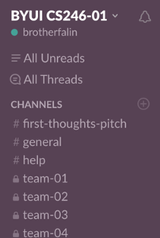

Instructor notes - Setting up Slack
Background
This course will use Slack for course discussions, Q&A with the instructor, and student conversations with their teams. As an instructor, one of your more important roles is to be present in this forum. That doesn't mean you need to answer every question, because it's even better if the students answer each other's questions. But, they need to know that you are there, and that their questions are not being lost into a black hole.
In addition, you will have some responsibility for getting the Slack organization up and running initially.
Installing Slack
While Slack can be used in a browser, the experience is much easier in their client application, so it is strongly recommended that you download and install this free app.
Creating a Slack Organization
Once you have installed Slack, you need to create a new organization for your section. There should be one organization per section of the course. And the free version is sufficient for the things we will do. The following are the general steps to set up your organization:
In the Slack app, click the button to sign into another team. This is likely a large plus button on the left panel.
Select the option to "Create a New Team"
Enter your byui.edu email address, and follow the steps to verify your email.
To help the students clearly recognize you in discussions, you should use your title (Brother/Sister) with your name (e.g., "Brother Burton").
For the Slack organization name, please use the convention:
byui-course-semester-section, such as:byui-cs313-17s-02.With regard to sending invitations: you are welcome to gather the email address of your students and send them and invitation, however, experience has shown that many of these get lost, and it has been easier to simply allow students to sign up themselves. To enable this, check the box that allows anyone with a valid byui.edu email address to join the organization.
After the organization has been created, your students can sign up themselves at a url like the following: https://byui-cs313-17s-02.slack.com
Team Settings
In the team settings screen, you should modify the Invitations, Channel Management, Stats, Custom Emoji & Loading Messages, Slackbot Responses, Gateways, and Apps & Integration settings so that only Team Admins and Owners may use those features.
Creating Initial Channels
Slack organizes it's discussions into channels. Each channel is prefixed with a # (hashtag) symbol.
Most class-wide discussion should take place in the #general channel. However, many students prefer to have an additional channel for asking for help, such as #help.
Having too many channels makes it difficult for people to know where conversations are occurring, so it is suggested you restrict general discussions to those two channels and only add extra channels for special purposes, such as project pitches or other discussion-based assignments.
Private Team Channels
Once teams have formed, you should create private team channels for each team, in the format #team-01, #team-02, etc... Once you create the channel and mark it as private, you can give access to the individuals that belong to that team by inviting them to the channel.
Announcing Slack in the Course
Once the Slack organization has been created, you need to tell the students about it and give them instructions for how to sign up. The most important things to tell them are that:
-
Participation in the Slack discussions is not optional and will be the primary communication method used in the course.
-
How to download a Slack client for their computer or mobile device.
-
How to employ proper Slack etiquette.
Using Slack vs. Announcements and Email
While Slack will be the primary vehicle for course discussion and coordination, I-Learn announcements and email have important roles as well.
Slack
Slack should be used for Q&A about the course and it's topics. This is ideal for discussion about the weekly topics and assignments. In addition, students should be encouraged to use Slack for all of their team discussions and as the primary way to contact the instructor.
You can respond to a specific student by prefixing their Slack user name with the @ symbol. This will send a notification to whatever device they've used to sign up for slack. It is customary to reply to direct questions from students in this fashion.
In addition, you can send a notification to the entire class by posting in the #general channel and addressing the message to @channel.
Finally, anytime you post to a private channel, every member of that channel is notified by default.
Announcements
I-Learn Announcements should be used for any official course business or announcements, such as changing the due dates or the scope of announcements. You should consider Slack and supplementary discussion, but Announcements as core, official business channel.
Email should be used for any sensitive or personal communication with an individual student. For example, a discussion about plagiarism or if a student has not been responsive to their teammates, or is missing assignments. Email is the official medium of communication recognized by the university for university business.